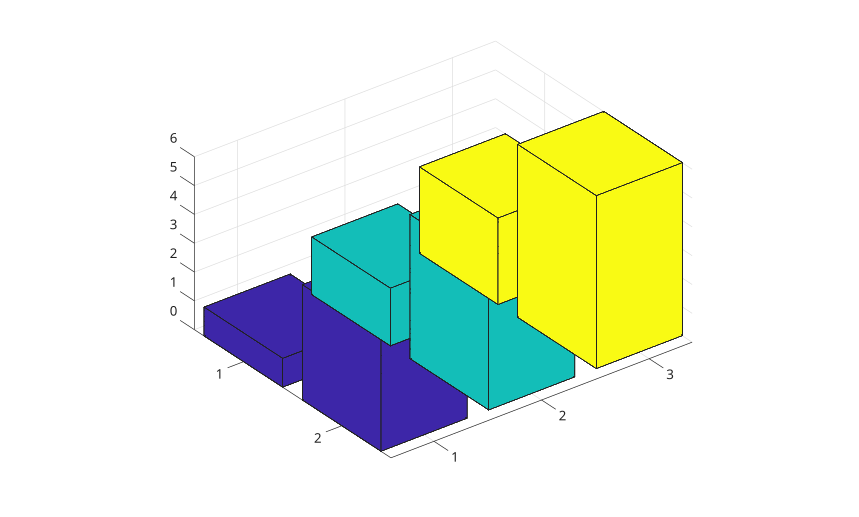
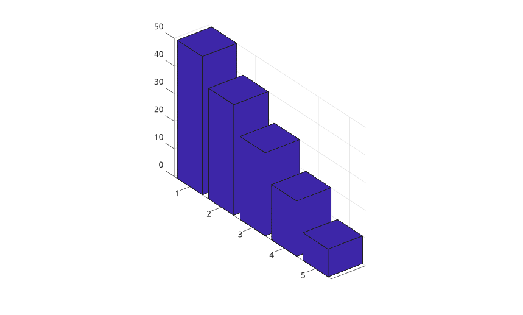
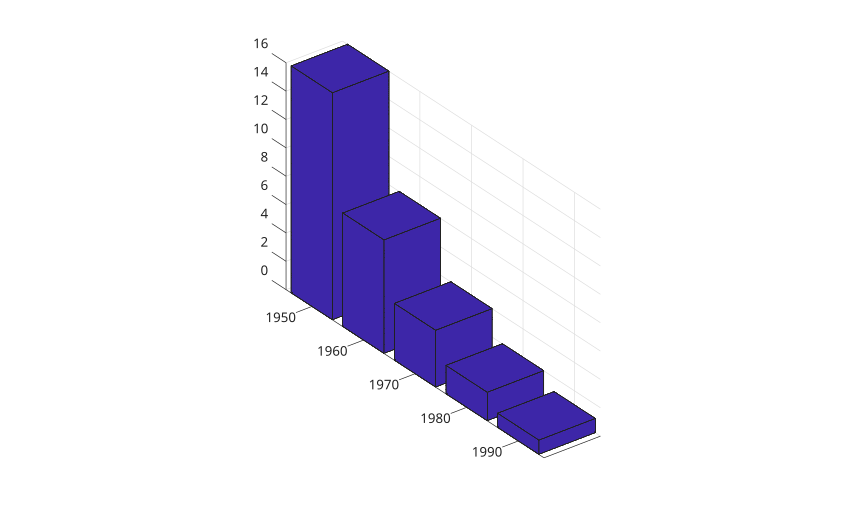
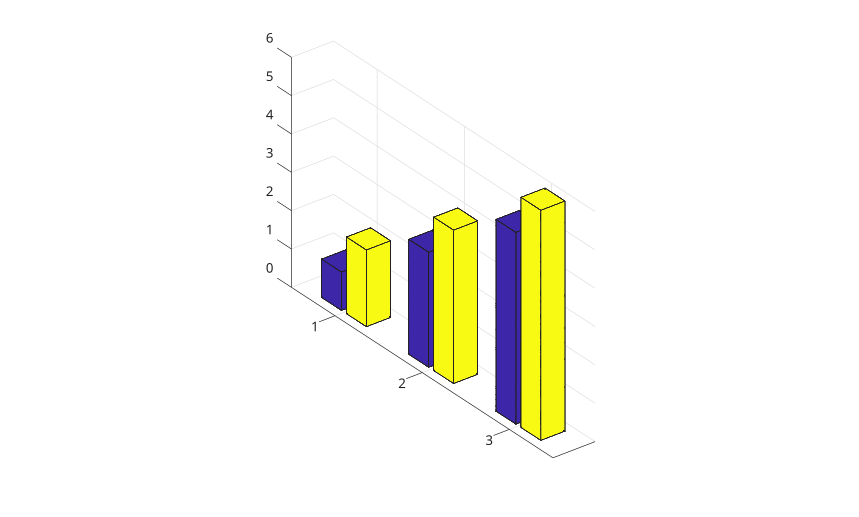
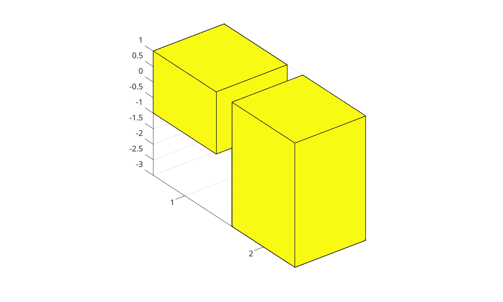
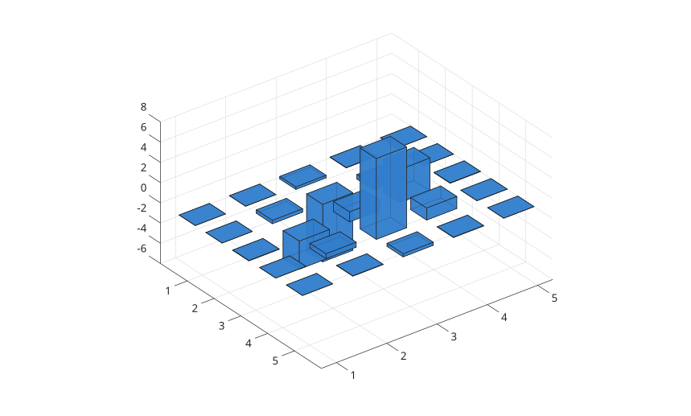

bar3(Y)
bar3(Z, Y)
bar3(..., width)
bar3(..., 'detached')
bar3(..., 'grouped')
bar3(..., 'stacked')
bar3(..., color)
bar3(parent, ...)
h = bar3(...)
| Paramètre | Description |
|---|---|
| Y | Vecteur ou matrice numerique des hauteurs de barres. |
| Z | positions des lignes de barres. |
| width | Largeur relative des barres. La valeur par defaut est 0.8. |
| color | nom de couleur ou nom court de couleur pour les faces. |
| Paramètre | Description |
|---|---|
| h | objet graphique surface ou vecteur d'objets graphiques surface. |
bar3 affiche les colonnes sous forme de cuboides 3-D. Les colonnes de la matrice sont placees selon x et les lignes selon y.
Utiliser 'grouped' pour grouper les colonnes de matrice a chaque position de ligne et 'stacked' pour les empiler.
f = figure();
Y = [1 2 3; 4 5 6];
bar3(Y);
f = figure();
z = [50 40 30 20 10];
bar3(z);
f = figure();
z = [1950 1960 1970 1980 1990];
y = [16 8 4 2 1];
bar3(z, y);
f = figure();
y = [1 2; 3 4; 5 6];
bar3(y, 'grouped');
f = figure();
y = [1 -2; -3 4];
bar3(y, 'stacked');
f = figure();
h = bar3(peaks(5), 0.6);
set(h, 'FaceColor', [0.2 0.5 0.8], 'FaceAlpha', 0.8);